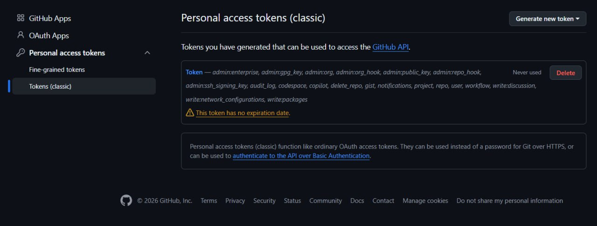
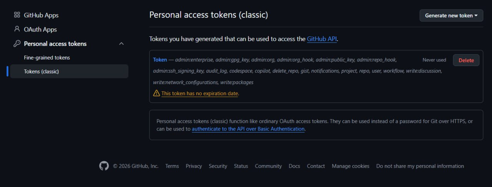
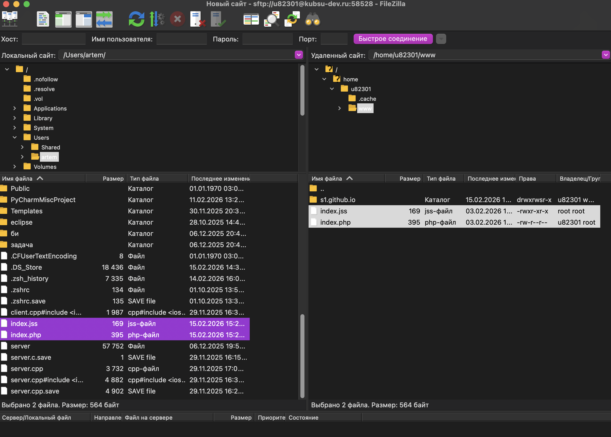

Лабораторная работа №1 WEB
1. Ssh подключение
Подключаемся к учебному серверу помощью команды ssh. Вводим свой индекс и пароль.

2. Ping kubsu.ru
Проверка доступности сервера kubsu.ru с помощью команды ping. Отправлено 4 пакета, все 4 получены обратно (0% потерь).

3. Nslookup (A и MX записи)
nslookup -type=A kubsu.ru. Эта команда запрашивает A-запись домена, которая связывает имя домена с IP-адресом. nslookup -type=MX kubsu.ru. Эта команда запрашивает MX-запись (Mail Exchange) домена. Она указывает, на какие серверы должна доставляться почта.

4. Whois (дата регистрации доменов)
Получение информации о регистрации доменов kubsu.ru и kubsu-dev.ru.

5. Git clone
Клонирование репозитория с GitHub на учебный сервер с помощью команды git clone
 


6. SFTP скачивание файлов
Создание нового сервера, подключение к учебного и скачивание файлов с сервера по протоколу SFTP.
